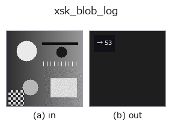

features op• 数据种类:image → feature
• 调用:fullseye.apply(img, "xsk_blob_log", a=0.5, b=0.5)(2-D 的模型是一张图 + 两个标量旋钮 a,b∈[0,1])

*图为在 128×128 合成输入上实际运行的输出。左为输入，右为输出。点云以俯视散点显示(亮度 = z)，一维序列为折线，体数据为沿 z 的最大值投影，视频为中间帧，复数图像为幅值；无法成像的返回值直接显示数值。*
扫描旋钮 a(0.1 / 0.5 / 0.9，另一旋钮取默认):
▸ xsk_blob_log: 旋钮 a 扫描 (文档网站)
扫描旋钮 b(0.1 / 0.5 / 0.9，另一旋钮取默认):
▸ xsk_blob_log: 旋钮 b 扫描 (文档网站)
检测到的斑点（斑点状结构）数量（以 LoG/DoG/DoH 之一检测）。
使用 skimage.feature 的 Laplacian of Gaussian(LoG)/ Difference of Gaussian(DoG)/ Determinant of Hessian(DoH)之一(此代码对 3 种方法采用共同实现，使用哪一种取决于调用方以哪个 op 名注册 —— xsk_blob_log / xsk_blob_dog / xsk_blob_doh ——)检测斑点(blob)，并直接返回其个数(feature 输出)。
a 在 5~25 的范围内调节搜索的最大尺度 max_sigma (越大越能检测到更大的斑点)。b 将检测阈值 threshold 在 0.02~0.17 之间调节(越小越能检测到更弱的斑点，检测数也越容易增加)。3 种方法在速度和精度上不同(LoG 最准确但较慢，DoH 对边缘较强，但不擅长小斑点，等)。
• 示例数据目录(下载 URL / 许可证) —— 2-D 用 skimage.data(BSD/公有领域)加合成图,3-D 给出真实数据源(Stanford/PDS 等)的下载 URL。
• 算子来历与参考文献 —— 该算子族所依据的研究/方法出处。
• 算法的正典(作者、年份)与用途见上面的族使用指南。
下面的程序已确认可以运行(与图相同的输入)。在 Studio 帮助中，此块会变成按钮，可当场加载并运行。
xsk_blob_log 0.50 0.50
• gallery2d_features — py -3.11 examples/gallery2d_features.py
• poc_search_sweep_width — py -3.11 examples/poc_search_sweep_width.py
feature 作为输入)features)effective_bit_depth · blob_count · area_frac · count_contours · total_length · vol_count · sk_euler · sk_entropy_feat
*Provenance: ops.py — 2D 算子登记表。本条目由 tools/opdocs.py md 自动生成(请勿手工编辑)。*
© 2026 Kazufumi Furuse — Fullseye operator documentation. Licensed under Apache-2.0.